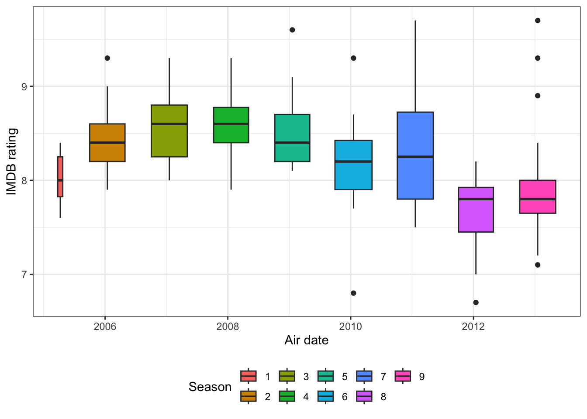
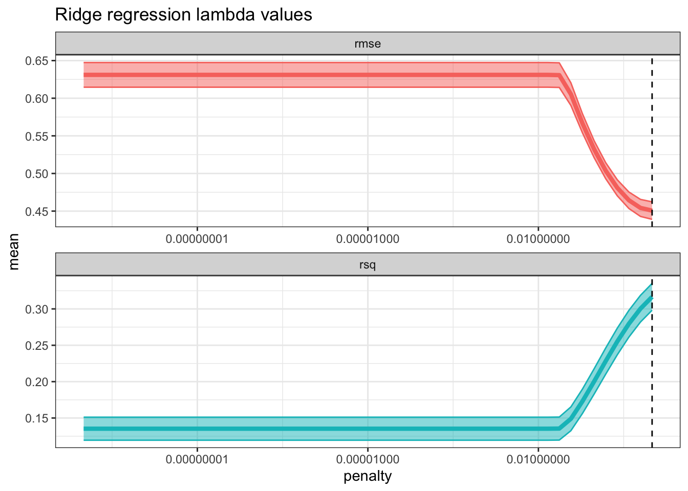
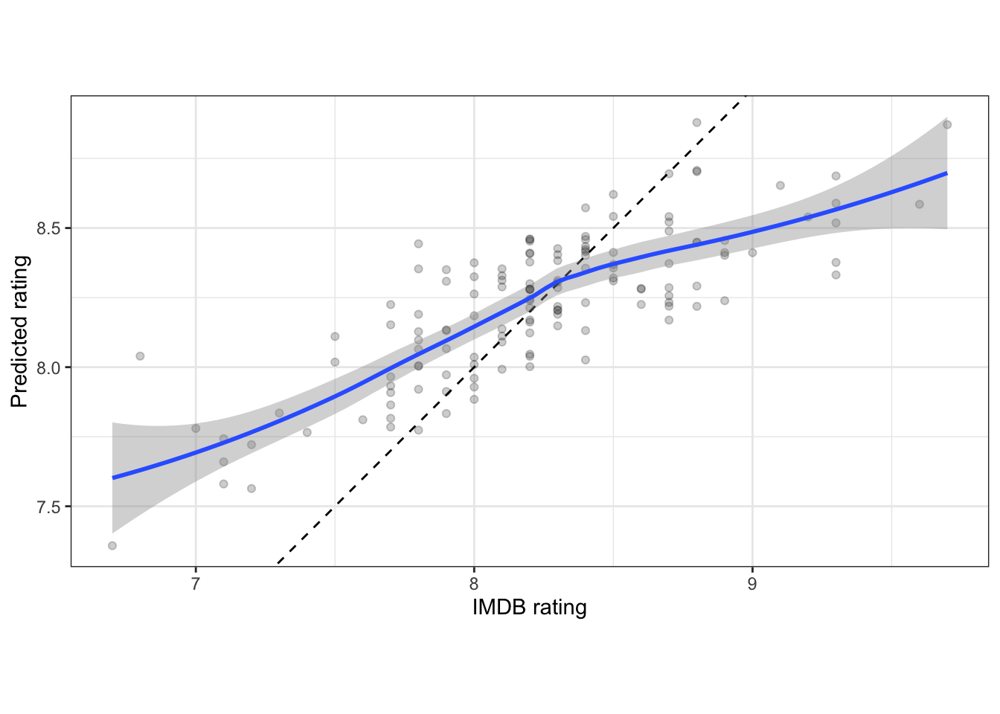
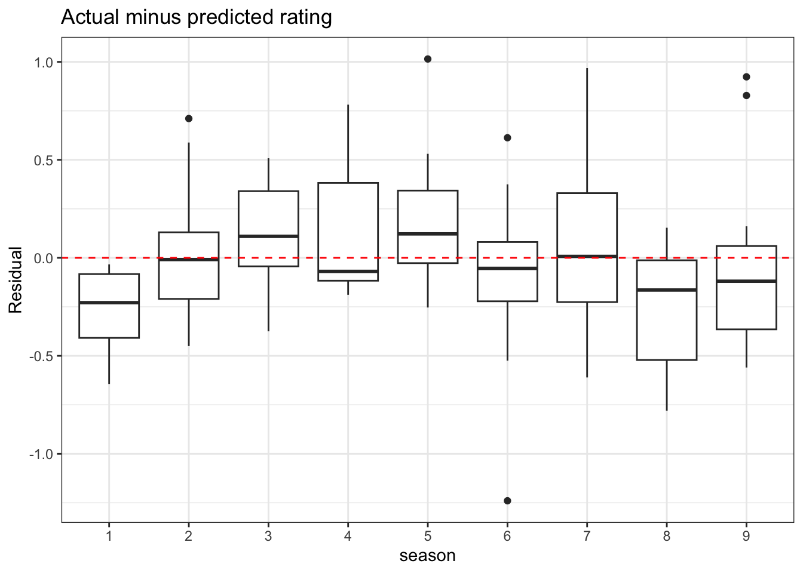
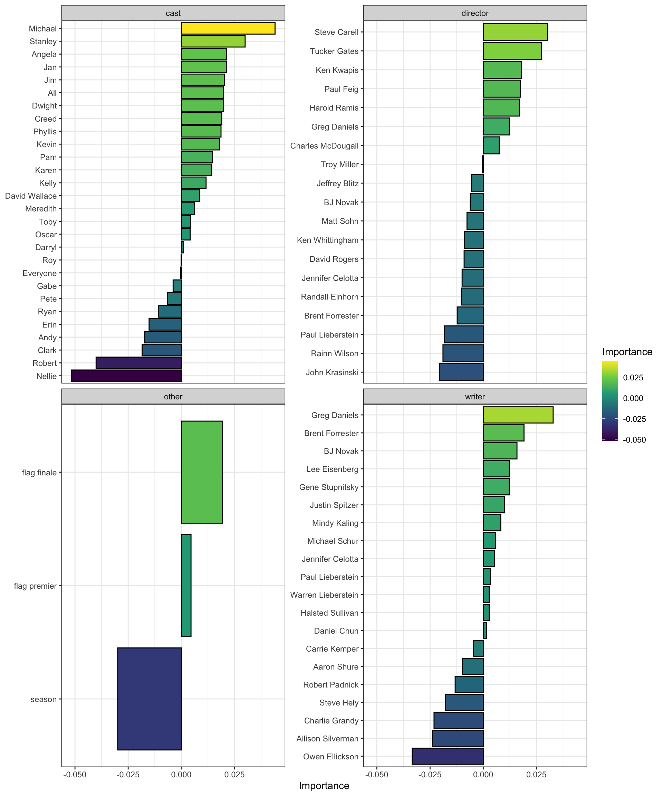

library(tidyverse)
library(lubridate)
library(tidytext)
library(janitor)
library(schrute)
library(tidyr)
library(glmnet)
library(tidymodels)
library(vip)
options(scipen = 999, digits = 2)
theme_set(theme_bw())
set.seed(1234)The goal for this analysis is to determine which characters, directors, and writers from The Office most influence an episode’s IMDB rating. My hypothesis is that IMDB rating is largely driven by a few show personnel. I also briefly walk through the data cleaning and modeling processes. This analysis is based on code from Julia Silge’s Tidy Tuesdays writeup She does a very good job of explaining the modeling aspects of this. She uses LASSO regression, which is very similar to the ridge regression I use.
The steps in the analysis are:
- organize the data
- split by role (director, writer, and character)
- clean up the data
- model the data
- review model output and performance
I use these variables in the model:
- season
- was the episode a season premier
- was the episode a season finale
- was a given director involved in the episode
- was a given writer involved in the episode
- how many lines did each character have in the episode
Setup
The first step is to download the data from the {schrute} package. The data is organized by season/episode/line, which is useful for analyzing characters, but not writers or directors.
df <- schrute::theoffice %>%
as_tibble() %>%
mutate(air_date = ymd(air_date))
glimpse(df)Rows: 55,130
Columns: 12
$ index <int> 1, 2, 3, 4, 5, 6, 7, 8, 9, 10, 11, 12, 13, 14, 15, 16…
$ season <int> 1, 1, 1, 1, 1, 1, 1, 1, 1, 1, 1, 1, 1, 1, 1, 1, 1, 1,…
$ episode <int> 1, 1, 1, 1, 1, 1, 1, 1, 1, 1, 1, 1, 1, 1, 1, 1, 1, 1,…
$ episode_name <chr> "Pilot", "Pilot", "Pilot", "Pilot", "Pilot", "Pilot",…
$ director <chr> "Ken Kwapis", "Ken Kwapis", "Ken Kwapis", "Ken Kwapis…
$ writer <chr> "Ricky Gervais;Stephen Merchant;Greg Daniels", "Ricky…
$ character <chr> "Michael", "Jim", "Michael", "Jim", "Michael", "Micha…
$ text <chr> "All right Jim. Your quarterlies look very good. How …
$ text_w_direction <chr> "All right Jim. Your quarterlies look very good. How …
$ imdb_rating <dbl> 7.6, 7.6, 7.6, 7.6, 7.6, 7.6, 7.6, 7.6, 7.6, 7.6, 7.6…
$ total_votes <int> 3706, 3706, 3706, 3706, 3706, 3706, 3706, 3706, 3706,…
$ air_date <date> 2005-03-24, 2005-03-24, 2005-03-24, 2005-03-24, 2005…Basic EDA
The boxplot shows that season may have an impact on the rating, so I will include that in the model.
df %>%
distinct(air_date, season, imdb_rating) %>%
ggplot(aes(air_date, imdb_rating, fill = as.factor(season))) +
geom_boxplot() +
labs(x = "Air date",
y = "IMDB rating",
fill = "Season") +
theme(legend.position = "bottom")
This creates a table with IMDB ratings and season premier/finale flags. This will be the table I join the personnel data to.
df_imdb <- df %>%
distinct(season, episode, imdb_rating) %>%
group_by(season) %>%
mutate(flag_premier = episode == first(episode),
flag_finale = episode == last(episode)) %>%
ungroup() %>%
mutate(across(contains("flag"), as.numeric))
glimpse(df_imdb)Rows: 186
Columns: 5
$ season <int> 1, 1, 1, 1, 1, 1, 2, 2, 2, 2, 2, 2, 2, 2, 2, 2, 2, 2, 2, …
$ episode <int> 1, 2, 3, 4, 5, 6, 1, 2, 3, 4, 5, 6, 7, 8, 9, 10, 11, 12, …
$ imdb_rating <dbl> 7.6, 8.3, 7.9, 8.1, 8.4, 7.8, 8.7, 8.2, 8.4, 8.4, 8.2, 8.…
$ flag_premier <dbl> 1, 0, 0, 0, 0, 0, 1, 0, 0, 0, 0, 0, 0, 0, 0, 0, 0, 0, 0, …
$ flag_finale <dbl> 0, 0, 0, 0, 0, 1, 0, 0, 0, 0, 0, 0, 0, 0, 0, 0, 0, 0, 0, …Directors
Some episodes have more than one director, so I move them into separate rows.
df_directors <- df %>%
distinct(season, episode, director) %>%
separate_rows(director, sep = ";")The original data contains misspellings of director names, which will cause issues when I filter out less common directors. This code fixes those misspellings.
df_director_fix <- tibble(director_good = c("Charles McDougall",
"Claire Scanlon",
"Greg Daniels",
"Ken Whittingham",
"Paul Lieberstein"),
director_bad = c("Charles McDougal",
"Claire Scanlong",
"Greg Daneils",
"Ken Wittingham",
"Paul Lieerstein"))
df_directors <- df_directors %>%
left_join(df_director_fix, by = c("director" = "director_bad")) %>%
mutate(director = case_when(!is.na(director_good) ~ director_good,
is.na(director_good) ~ director)) %>%
mutate(director = str_c("director", director, sep = "_")) %>%
select(-director_good)This cleans up the director names and selects only directors that were involved in more than 2 episodes.
df_directors <- df_directors %>%
mutate(director = str_remove_all(director, "\\."),
director = str_replace_all(director, "\\-", "_"),
director = str_replace_all(director, " ", "_")) %>%
add_count(director) %>%
filter(n > 2) %>%
select(-n)This pivots the data wide so it can be used with the regression model.
df_directors <- df_directors %>%
mutate(flag = 1) %>%
pivot_wider(id_cols = c(season, episode), names_from = director, values_from = flag, values_fill = list(flag = 0))
df_directors %>%
select(1:20) %>%
glimpse()Rows: 139
Columns: 20
$ season <int> 1, 1, 1, 1, 2, 2, 2, 2, 2, 2, 2, 2, 2, 2, 2…
$ episode <int> 1, 2, 3, 5, 1, 2, 3, 4, 5, 6, 7, 8, 9, 10, …
$ director_Ken_Kwapis <dbl> 1, 1, 0, 0, 0, 1, 0, 1, 0, 1, 0, 0, 0, 0, 1…
$ director_Ken_Whittingham <dbl> 0, 0, 1, 0, 0, 0, 0, 0, 0, 0, 0, 0, 0, 0, 0…
$ director_Greg_Daniels <dbl> 0, 0, 0, 1, 1, 0, 0, 0, 0, 0, 1, 0, 0, 0, 0…
$ director_Paul_Feig <dbl> 0, 0, 0, 0, 0, 0, 1, 0, 1, 0, 0, 1, 1, 0, 0…
$ director_Charles_McDougall <dbl> 0, 0, 0, 0, 0, 0, 0, 0, 0, 0, 0, 0, 0, 1, 0…
$ director_Randall_Einhorn <dbl> 0, 0, 0, 0, 0, 0, 0, 0, 0, 0, 0, 0, 0, 0, 0…
$ director_Tucker_Gates <dbl> 0, 0, 0, 0, 0, 0, 0, 0, 0, 0, 0, 0, 0, 0, 0…
$ director_Jeffrey_Blitz <dbl> 0, 0, 0, 0, 0, 0, 0, 0, 0, 0, 0, 0, 0, 0, 0…
$ director_Harold_Ramis <dbl> 0, 0, 0, 0, 0, 0, 0, 0, 0, 0, 0, 0, 0, 0, 0…
$ director_Paul_Lieberstein <dbl> 0, 0, 0, 0, 0, 0, 0, 0, 0, 0, 0, 0, 0, 0, 0…
$ director_Jennifer_Celotta <dbl> 0, 0, 0, 0, 0, 0, 0, 0, 0, 0, 0, 0, 0, 0, 0…
$ director_David_Rogers <dbl> 0, 0, 0, 0, 0, 0, 0, 0, 0, 0, 0, 0, 0, 0, 0…
$ director_Steve_Carell <dbl> 0, 0, 0, 0, 0, 0, 0, 0, 0, 0, 0, 0, 0, 0, 0…
$ director_Brent_Forrester <dbl> 0, 0, 0, 0, 0, 0, 0, 0, 0, 0, 0, 0, 0, 0, 0…
$ director_BJ_Novak <dbl> 0, 0, 0, 0, 0, 0, 0, 0, 0, 0, 0, 0, 0, 0, 0…
$ director_John_Krasinski <dbl> 0, 0, 0, 0, 0, 0, 0, 0, 0, 0, 0, 0, 0, 0, 0…
$ director_Matt_Sohn <dbl> 0, 0, 0, 0, 0, 0, 0, 0, 0, 0, 0, 0, 0, 0, 0…
$ director_Rainn_Wilson <dbl> 0, 0, 0, 0, 0, 0, 0, 0, 0, 0, 0, 0, 0, 0, 0…Writers
This separates out where more than one writer was involved in an episode, filters on writers that were involved in more than 2 episodes, and pivots the data wide.
df_writers <- df %>%
distinct(season, episode, writer) %>%
separate_rows(writer, sep = ";") %>%
add_count(writer) %>%
filter(n > 2)
df_writers <- df_writers %>%
mutate(writer = str_remove_all(writer, "\\."),
writer = str_replace_all(writer, "\\-", "_"),
writer = str_replace_all(writer, " ", "_")) %>%
mutate(writer = str_c("writer", writer, sep = "_"))
df_writers <- df_writers %>%
mutate(flag = 1) %>%
pivot_wider(id_cols = c(season, episode), names_from = writer, values_from = flag, values_fill = list(flag = 0))
df_writers %>%
select(1:20) %>%
glimpse()Rows: 157
Columns: 20
$ season <int> 1, 1, 1, 1, 1, 1, 2, 2, 2, 2, 2, 2, 2, 2, 2,…
$ episode <int> 1, 2, 3, 4, 5, 6, 1, 2, 3, 4, 5, 6, 7, 9, 10…
$ writer_Greg_Daniels <dbl> 1, 0, 0, 0, 1, 0, 0, 0, 0, 0, 1, 0, 0, 0, 0,…
$ writer_BJ_Novak <dbl> 0, 1, 0, 0, 0, 0, 0, 1, 0, 1, 0, 0, 0, 0, 0,…
$ writer_Paul_Lieberstein <dbl> 0, 0, 1, 0, 0, 0, 0, 0, 0, 0, 0, 0, 1, 0, 0,…
$ writer_Michael_Schur <dbl> 0, 0, 0, 1, 0, 0, 0, 0, 1, 0, 0, 0, 0, 0, 1,…
$ writer_Mindy_Kaling <dbl> 0, 0, 0, 0, 0, 1, 1, 0, 0, 0, 0, 0, 0, 0, 0,…
$ writer_Gene_Stupnitsky <dbl> 0, 0, 0, 0, 0, 0, 0, 0, 0, 0, 0, 1, 0, 0, 0,…
$ writer_Lee_Eisenberg <dbl> 0, 0, 0, 0, 0, 0, 0, 0, 0, 0, 0, 1, 0, 0, 0,…
$ writer_Jennifer_Celotta <dbl> 0, 0, 0, 0, 0, 0, 0, 0, 0, 0, 0, 0, 0, 1, 0,…
$ writer_Brent_Forrester <dbl> 0, 0, 0, 0, 0, 0, 0, 0, 0, 0, 0, 0, 0, 0, 0,…
$ writer_Justin_Spitzer <dbl> 0, 0, 0, 0, 0, 0, 0, 0, 0, 0, 0, 0, 0, 0, 0,…
$ writer_Aaron_Shure <dbl> 0, 0, 0, 0, 0, 0, 0, 0, 0, 0, 0, 0, 0, 0, 0,…
$ writer_Charlie_Grandy <dbl> 0, 0, 0, 0, 0, 0, 0, 0, 0, 0, 0, 0, 0, 0, 0,…
$ writer_Warren_Lieberstein <dbl> 0, 0, 0, 0, 0, 0, 0, 0, 0, 0, 0, 0, 0, 0, 0,…
$ writer_Halsted_Sullivan <dbl> 0, 0, 0, 0, 0, 0, 0, 0, 0, 0, 0, 0, 0, 0, 0,…
$ writer_Daniel_Chun <dbl> 0, 0, 0, 0, 0, 0, 0, 0, 0, 0, 0, 0, 0, 0, 0,…
$ writer_Carrie_Kemper <dbl> 0, 0, 0, 0, 0, 0, 0, 0, 0, 0, 0, 0, 0, 0, 0,…
$ writer_Steve_Hely <dbl> 0, 0, 0, 0, 0, 0, 0, 0, 0, 0, 0, 0, 0, 0, 0,…
$ writer_Robert_Padnick <dbl> 0, 0, 0, 0, 0, 0, 0, 0, 0, 0, 0, 0, 0, 0, 0,…Characters
Some of the characters are named inconsistently, so this fixes the cases I identified.
df_characters <- df %>%
select(season, episode, character) %>%
mutate(character = case_when(season == 7 & episode == 18 & character == "Todd" ~ "Todd Packer",
TRUE ~ character)) %>%
mutate(character = case_when(season == 7 & episode == 14 & character == "David" ~ character,
character == "David" ~ "David Wallace",
TRUE ~ character)) %>%
mutate(character = case_when(character == "DeAngelo" ~ "Deangelo",
TRUE ~ character))Some of the values contain odd characters that need to be removed. This also counts how many lines a character had in an episode.
df_characters <- df_characters %>%
mutate(character = str_replace_all(character, " & ", " and "),
character = str_replace_all(character, "/", " and "),
character = str_replace_all(character, ",", " and "),
character = str_trim(character),
character = str_remove_all(character, "#"),
character = str_remove_all(character, "-"),
character = str_remove_all(character, "'"),
character = str_remove_all(character, '"'),
character = str_remove_all(character, "\\["),
character = str_remove_all(character, "\\]"),
character = str_remove_all(character, "\\("),
character = str_remove_all(character, "\\)"),
character = str_replace_all(character, " ", "_")) %>%
count(season, episode, character, name = "line_count")This selects only the characters that were involved in more than 20 episodes and pivots the data wide. The value in each character column shows how many lines they had in the episode.
df_top_characters <- df_characters %>%
count(character, sort = TRUE) %>%
filter(n >= 20) %>%
select(character)
df_characters_main <- df_characters %>%
semi_join(df_top_characters) %>%
pivot_wider(id_cols = c(season, episode),
names_from = character,
names_prefix = "cast_",
values_from = line_count,
values_fill = list(line_count = 0))
df_characters_main %>%
select(1:20) %>%
glimpse()Rows: 186
Columns: 20
$ season <int> 1, 1, 1, 1, 1, 1, 2, 2, 2, 2, 2, 2, 2, 2, 2, 2, 2, 2, 2,…
$ episode <int> 1, 2, 3, 4, 5, 6, 1, 2, 3, 4, 5, 6, 7, 8, 9, 10, 11, 12,…
$ cast_Angela <int> 1, 4, 5, 7, 3, 3, 1, 2, 6, 17, 13, 3, 0, 5, 13, 9, 1, 5,…
$ cast_Dwight <int> 29, 17, 62, 47, 25, 28, 32, 11, 55, 65, 33, 64, 22, 42, …
$ cast_Jan <int> 12, 0, 18, 0, 0, 8, 9, 11, 0, 0, 0, 0, 46, 52, 0, 0, 0, …
$ cast_Jim <int> 36, 25, 42, 49, 21, 55, 32, 16, 55, 51, 30, 49, 40, 26, …
$ cast_Kevin <int> 1, 8, 6, 3, 1, 5, 1, 6, 9, 5, 2, 3, 1, 4, 8, 11, 0, 2, 8…
$ cast_Michael <int> 81, 75, 56, 68, 104, 106, 96, 100, 83, 69, 108, 85, 73, …
$ cast_Oscar <int> 3, 13, 9, 14, 2, 1, 2, 0, 10, 4, 7, 0, 4, 1, 6, 8, 1, 3,…
$ cast_Pam <int> 41, 12, 32, 22, 14, 45, 41, 27, 33, 22, 27, 25, 32, 30, …
$ cast_Phyllis <int> 2, 0, 0, 5, 4, 0, 10, 6, 2, 6, 3, 0, 4, 1, 4, 5, 4, 3, 0…
$ cast_Roy <int> 5, 0, 0, 3, 12, 14, 6, 14, 0, 6, 0, 0, 1, 0, 0, 8, 11, 0…
$ cast_Ryan <int> 8, 4, 1, 4, 8, 12, 2, 1, 5, 40, 1, 18, 6, 1, 2, 15, 2, 1…
$ cast_Stanley <int> 5, 5, 6, 2, 3, 3, 8, 1, 3, 5, 3, 3, 0, 4, 2, 5, 8, 4, 3,…
$ cast_Kelly <int> 0, 2, 0, 0, 0, 0, 7, 0, 0, 4, 3, 3, 1, 2, 1, 8, 4, 1, 5,…
$ cast_Toby <int> 0, 2, 0, 4, 0, 7, 0, 26, 0, 0, 0, 5, 1, 1, 0, 3, 0, 7, 3…
$ cast_Meredith <int> 0, 0, 3, 10, 0, 0, 0, 1, 1, 4, 0, 0, 0, 0, 0, 10, 3, 1, …
$ cast_Darryl <int> 0, 0, 0, 0, 15, 0, 1, 9, 0, 0, 0, 0, 0, 0, 0, 11, 3, 0, …
$ cast_Everyone <int> 0, 0, 0, 0, 0, 0, 0, 0, 1, 0, 0, 0, 1, 0, 0, 0, 0, 0, 0,…
$ cast_Creed <int> 0, 0, 0, 0, 0, 0, 0, 0, 0, 0, 16, 0, 0, 1, 0, 4, 0, 1, 3…Prepare data for modeling
This combines all the personnel tables and creates an episode_id variable. I also replace missing values with 0.
df_office <- df_imdb %>%
left_join(df_directors) %>%
left_join(df_writers) %>%
left_join(df_characters_main) %>%
mutate(episode_id = str_c(season, episode, sep = "_")) %>%
mutate(across(contains("director"), coalesce, 0),
across(contains("writer"), coalesce, 0)) %>%
select(-episode)
df_office %>%
glimpse()Rows: 186
Columns: 72
$ season <int> 1, 1, 1, 1, 1, 1, 2, 2, 2, 2, 2, 2, 2, 2, 2…
$ imdb_rating <dbl> 7.6, 8.3, 7.9, 8.1, 8.4, 7.8, 8.7, 8.2, 8.4…
$ flag_premier <dbl> 1, 0, 0, 0, 0, 0, 1, 0, 0, 0, 0, 0, 0, 0, 0…
$ flag_finale <dbl> 0, 0, 0, 0, 0, 1, 0, 0, 0, 0, 0, 0, 0, 0, 0…
$ director_Ken_Kwapis <dbl> 1, 1, 0, 0, 0, 0, 0, 1, 0, 1, 0, 1, 0, 0, 0…
$ director_Ken_Whittingham <dbl> 0, 0, 1, 0, 0, 0, 0, 0, 0, 0, 0, 0, 0, 0, 0…
$ director_Greg_Daniels <dbl> 0, 0, 0, 0, 1, 0, 1, 0, 0, 0, 0, 0, 1, 0, 0…
$ director_Paul_Feig <dbl> 0, 0, 0, 0, 0, 0, 0, 0, 1, 0, 1, 0, 0, 1, 1…
$ director_Charles_McDougall <dbl> 0, 0, 0, 0, 0, 0, 0, 0, 0, 0, 0, 0, 0, 0, 0…
$ director_Randall_Einhorn <dbl> 0, 0, 0, 0, 0, 0, 0, 0, 0, 0, 0, 0, 0, 0, 0…
$ director_Tucker_Gates <dbl> 0, 0, 0, 0, 0, 0, 0, 0, 0, 0, 0, 0, 0, 0, 0…
$ director_Jeffrey_Blitz <dbl> 0, 0, 0, 0, 0, 0, 0, 0, 0, 0, 0, 0, 0, 0, 0…
$ director_Harold_Ramis <dbl> 0, 0, 0, 0, 0, 0, 0, 0, 0, 0, 0, 0, 0, 0, 0…
$ director_Paul_Lieberstein <dbl> 0, 0, 0, 0, 0, 0, 0, 0, 0, 0, 0, 0, 0, 0, 0…
$ director_Jennifer_Celotta <dbl> 0, 0, 0, 0, 0, 0, 0, 0, 0, 0, 0, 0, 0, 0, 0…
$ director_David_Rogers <dbl> 0, 0, 0, 0, 0, 0, 0, 0, 0, 0, 0, 0, 0, 0, 0…
$ director_Steve_Carell <dbl> 0, 0, 0, 0, 0, 0, 0, 0, 0, 0, 0, 0, 0, 0, 0…
$ director_Brent_Forrester <dbl> 0, 0, 0, 0, 0, 0, 0, 0, 0, 0, 0, 0, 0, 0, 0…
$ director_BJ_Novak <dbl> 0, 0, 0, 0, 0, 0, 0, 0, 0, 0, 0, 0, 0, 0, 0…
$ director_John_Krasinski <dbl> 0, 0, 0, 0, 0, 0, 0, 0, 0, 0, 0, 0, 0, 0, 0…
$ director_Matt_Sohn <dbl> 0, 0, 0, 0, 0, 0, 0, 0, 0, 0, 0, 0, 0, 0, 0…
$ director_Rainn_Wilson <dbl> 0, 0, 0, 0, 0, 0, 0, 0, 0, 0, 0, 0, 0, 0, 0…
$ director_Troy_Miller <dbl> 0, 0, 0, 0, 0, 0, 0, 0, 0, 0, 0, 0, 0, 0, 0…
$ writer_Greg_Daniels <dbl> 1, 0, 0, 0, 1, 0, 0, 0, 0, 0, 1, 0, 0, 0, 0…
$ writer_BJ_Novak <dbl> 0, 1, 0, 0, 0, 0, 0, 1, 0, 1, 0, 0, 0, 0, 0…
$ writer_Paul_Lieberstein <dbl> 0, 0, 1, 0, 0, 0, 0, 0, 0, 0, 0, 0, 1, 0, 0…
$ writer_Michael_Schur <dbl> 0, 0, 0, 1, 0, 0, 0, 0, 1, 0, 0, 0, 0, 0, 0…
$ writer_Mindy_Kaling <dbl> 0, 0, 0, 0, 0, 1, 1, 0, 0, 0, 0, 0, 0, 0, 0…
$ writer_Gene_Stupnitsky <dbl> 0, 0, 0, 0, 0, 0, 0, 0, 0, 0, 0, 1, 0, 0, 0…
$ writer_Lee_Eisenberg <dbl> 0, 0, 0, 0, 0, 0, 0, 0, 0, 0, 0, 1, 0, 0, 0…
$ writer_Jennifer_Celotta <dbl> 0, 0, 0, 0, 0, 0, 0, 0, 0, 0, 0, 0, 0, 0, 1…
$ writer_Brent_Forrester <dbl> 0, 0, 0, 0, 0, 0, 0, 0, 0, 0, 0, 0, 0, 0, 0…
$ writer_Justin_Spitzer <dbl> 0, 0, 0, 0, 0, 0, 0, 0, 0, 0, 0, 0, 0, 0, 0…
$ writer_Aaron_Shure <dbl> 0, 0, 0, 0, 0, 0, 0, 0, 0, 0, 0, 0, 0, 0, 0…
$ writer_Charlie_Grandy <dbl> 0, 0, 0, 0, 0, 0, 0, 0, 0, 0, 0, 0, 0, 0, 0…
$ writer_Warren_Lieberstein <dbl> 0, 0, 0, 0, 0, 0, 0, 0, 0, 0, 0, 0, 0, 0, 0…
$ writer_Halsted_Sullivan <dbl> 0, 0, 0, 0, 0, 0, 0, 0, 0, 0, 0, 0, 0, 0, 0…
$ writer_Daniel_Chun <dbl> 0, 0, 0, 0, 0, 0, 0, 0, 0, 0, 0, 0, 0, 0, 0…
$ writer_Carrie_Kemper <dbl> 0, 0, 0, 0, 0, 0, 0, 0, 0, 0, 0, 0, 0, 0, 0…
$ writer_Steve_Hely <dbl> 0, 0, 0, 0, 0, 0, 0, 0, 0, 0, 0, 0, 0, 0, 0…
$ writer_Robert_Padnick <dbl> 0, 0, 0, 0, 0, 0, 0, 0, 0, 0, 0, 0, 0, 0, 0…
$ writer_Allison_Silverman <dbl> 0, 0, 0, 0, 0, 0, 0, 0, 0, 0, 0, 0, 0, 0, 0…
$ writer_Owen_Ellickson <dbl> 0, 0, 0, 0, 0, 0, 0, 0, 0, 0, 0, 0, 0, 0, 0…
$ cast_Angela <int> 1, 4, 5, 7, 3, 3, 1, 2, 6, 17, 13, 3, 0, 5,…
$ cast_Dwight <int> 29, 17, 62, 47, 25, 28, 32, 11, 55, 65, 33,…
$ cast_Jan <int> 12, 0, 18, 0, 0, 8, 9, 11, 0, 0, 0, 0, 46, …
$ cast_Jim <int> 36, 25, 42, 49, 21, 55, 32, 16, 55, 51, 30,…
$ cast_Kevin <int> 1, 8, 6, 3, 1, 5, 1, 6, 9, 5, 2, 3, 1, 4, 8…
$ cast_Michael <int> 81, 75, 56, 68, 104, 106, 96, 100, 83, 69, …
$ cast_Oscar <int> 3, 13, 9, 14, 2, 1, 2, 0, 10, 4, 7, 0, 4, 1…
$ cast_Pam <int> 41, 12, 32, 22, 14, 45, 41, 27, 33, 22, 27,…
$ cast_Phyllis <int> 2, 0, 0, 5, 4, 0, 10, 6, 2, 6, 3, 0, 4, 1, …
$ cast_Roy <int> 5, 0, 0, 3, 12, 14, 6, 14, 0, 6, 0, 0, 1, 0…
$ cast_Ryan <int> 8, 4, 1, 4, 8, 12, 2, 1, 5, 40, 1, 18, 6, 1…
$ cast_Stanley <int> 5, 5, 6, 2, 3, 3, 8, 1, 3, 5, 3, 3, 0, 4, 2…
$ cast_Kelly <int> 0, 2, 0, 0, 0, 0, 7, 0, 0, 4, 3, 3, 1, 2, 1…
$ cast_Toby <int> 0, 2, 0, 4, 0, 7, 0, 26, 0, 0, 0, 5, 1, 1, …
$ cast_Meredith <int> 0, 0, 3, 10, 0, 0, 0, 1, 1, 4, 0, 0, 0, 0, …
$ cast_Darryl <int> 0, 0, 0, 0, 15, 0, 1, 9, 0, 0, 0, 0, 0, 0, …
$ cast_Everyone <int> 0, 0, 0, 0, 0, 0, 0, 0, 1, 0, 0, 0, 1, 0, 0…
$ cast_Creed <int> 0, 0, 0, 0, 0, 0, 0, 0, 0, 0, 16, 0, 0, 1, …
$ cast_All <int> 0, 0, 0, 0, 0, 0, 0, 0, 0, 0, 0, 0, 0, 0, 0…
$ cast_David_Wallace <int> 0, 0, 0, 0, 0, 0, 0, 0, 0, 0, 0, 0, 0, 0, 0…
$ cast_Andy <int> 0, 0, 0, 0, 0, 0, 0, 0, 0, 0, 0, 0, 0, 0, 0…
$ cast_Karen <int> 0, 0, 0, 0, 0, 0, 0, 0, 0, 0, 0, 0, 0, 0, 0…
$ cast_Pete <int> 0, 0, 0, 0, 0, 0, 0, 0, 0, 0, 0, 0, 0, 0, 0…
$ cast_Erin <int> 0, 0, 0, 0, 0, 0, 0, 0, 0, 0, 0, 0, 0, 0, 0…
$ cast_Gabe <int> 0, 0, 0, 0, 0, 0, 0, 0, 0, 0, 0, 0, 0, 0, 0…
$ cast_Clark <int> 0, 0, 0, 0, 0, 0, 0, 0, 0, 0, 0, 0, 0, 0, 0…
$ cast_Robert <int> 0, 0, 0, 0, 0, 0, 0, 0, 0, 0, 0, 0, 0, 0, 0…
$ cast_Nellie <int> 0, 0, 0, 0, 0, 0, 0, 0, 0, 0, 0, 0, 0, 0, 0…
$ episode_id <chr> "1_1", "1_2", "1_3", "1_4", "1_5", "1_6", "…This splits the data into the training and testing sets that will be used to model the data. I stratify by season because it may have an effect on imdb_rating that I want to capture.
office_split <- initial_split(df_office, strata = season)
office_train <- training(office_split)
office_test <- testing(office_split)This creates a tidymodels recipe that removes zero-variance variables and normalizes the predictor variables.
office_rec <- recipe(imdb_rating ~ ., data = office_train) %>%
update_role(episode_id, new_role = "ID") %>%
step_zv(all_numeric(), -all_outcomes()) %>%
step_normalize(all_numeric(), -all_outcomes())
office_prep <- office_rec %>%
prep(strings_as_factors = FALSE)Modeling
I will use a linear model with ridge regression to penalize extreme coefficients. I bootstrap the training data and use tune() to find the optimal value for penalty.
wf <- workflow() %>%
add_recipe(office_rec)
office_boot <- bootstraps(office_train, strata = season)
tune_spec <- linear_reg(penalty = tune(), mixture = 0) %>%
set_engine("glmnet")
lambda_grid <- grid_regular(penalty(), levels = 50)
ridge_grid <- tune_grid(
wf %>% add_model(tune_spec),
resamples = office_boot,
grid = lambda_grid)lowest_rmse searches through the bootstrapped models to find the penalty that gives the lowest RMSE (root mean squared error). This graph shows that increasing the penalty increases performance, but has diminishing returns.
lowest_rmse <- ridge_grid %>%
select_best("rmse")
#graph metrics
ridge_grid %>%
collect_metrics() %>%
ggplot(aes(penalty, mean, color = .metric, fill = .metric)) +
geom_ribbon(aes(ymin = mean - std_err,
ymax = mean + std_err),
alpha = 0.5) +
geom_line(size = 1.5) +
geom_vline(xintercept = lowest_rmse$penalty, linetype = 2) +
facet_wrap(~.metric, scales = "free", nrow = 2) +
scale_x_log10() +
labs(title = "Ridge regression lambda values") +
theme(legend.position = "none")
This fits the model with the best value for penalty.
final_ridge <- finalize_workflow(wf %>% add_model(tune_spec), lowest_rmse)Assess model
The model generally overrates episodes with low ratings and underrates episodes with high ratings.
final_ridge %>%
fit(office_train) %>%
predict(office_train) %>%
bind_cols(office_train) %>%
ggplot(aes(imdb_rating, .pred)) +
geom_abline(linetype = 2) +
geom_point(alpha = .2) +
geom_smooth() +
coord_equal() +
labs(x = "IMDB rating",
y = "Predicted rating")
Examining the data by season shows that the model predicted imdb_rating reasonably well for most seasons. It overestimated season 1 and underestimated season 3.
final_ridge %>%
fit(office_train) %>%
predict(office_train) %>%
bind_cols(office_train) %>%
separate(episode_id, into = c("season", "episode"), sep = "_") %>%
mutate(.resid = imdb_rating - .pred) %>%
select(season, episode, .resid) %>%
ggplot(aes(season, .resid)) +
geom_boxplot() +
geom_hline(yintercept = 0, linetype = 2, color = "red") +
labs(y = "Residual",
title = "Actual minus predicted rating")
This graph shows the variable importance, split by role:
df_vi <- final_ridge %>%
fit(office_train) %>%
pull_workflow_fit() %>%
vi(lambda = lowest_rmse$penalty) %>%
mutate(Importance = case_when(Sign == "NEG" ~ Importance * -1,
TRUE ~ Importance)) %>%
mutate(Variable = case_when(str_detect(Variable, "writer|director|cast") ~ Variable,
TRUE ~ str_c("other_", Variable))) %>%
mutate(Variable = fct_reorder(Variable, Importance)) %>%
separate(Variable, sep = "_", into = c("role", "person"), extra = "merge") %>%
mutate(person = str_replace_all(person, "_", " "))
df_vi %>%
mutate(person = tidytext::reorder_within(x = person, by = Importance, within = role)) %>%
ggplot(aes(x = Importance, y = person, fill = Importance)) +
geom_col(color = "black") +
facet_wrap(~role, scales = "free_y") +
scale_fill_viridis_c() +
scale_y_reordered() +
labs(y = NULL)
The importance of characters is much more evenly distributed than I thought it would be. Stanley is the cast MVP (non-Michael division) based on this model. The character isn’t usually the focus of an episode, but when he has a lot of lines, the episode gets better ratings.

The high values for “All” show that scenes where the entire office is involved are highly associated with increased ratings.

I’m impressed by the high ratings for Michael and Jim, who carried a lot of the workload in terms of lines delivered. Despite this, the model still considers the number of lines they deliver to be important.
Carell’s directorship is significantly more important than the other directors. I was definitely surprised by this, since Carell only directed a few episodes, and I expected the ridge regression to penalize his director coefficient heavily.
The model has a dim view of Nellie and Robert, who were brought in fill the gap left by Carell’s departure from the show.

In the “other” variables, the model thinks the show gets lower ratings as the seasons go on. Finales and season premiers are positive influences.
Splitting the model inputs by role means I can compare how impactful a person was across roles. For example, the showrunner Greg Daniels was relatively more important as as writer than a director.
df_vi %>%
filter(person == "Greg Daniels")# A tibble: 2 × 4
role person Importance Sign
<chr> <chr> <dbl> <chr>
1 writer Greg Daniels 0.0328 POS
2 director Greg Daniels 0.0123 POS Rainn Wilson was much more important as a cast member than as a director.
df_vi %>%
filter(person == "Dwight" | person == "Rainn Wilson")# A tibble: 2 × 4
role person Importance Sign
<chr> <chr> <dbl> <chr>
1 cast Dwight 0.0197 POS
2 director Rainn Wilson -0.0189 NEG 
Finally, this tests how the model performs on test data that it has not seen. I think this is reasonably good, considering that TV show quality is driven by chemistry between the cast, which is hard to quantify.
last_fit(final_ridge, office_split) %>%
collect_metrics()# A tibble: 2 × 4
.metric .estimator .estimate .config
<chr> <chr> <dbl> <chr>
1 rmse standard 0.430 Preprocessor1_Model1
2 rsq standard 0.324 Preprocessor1_Model1